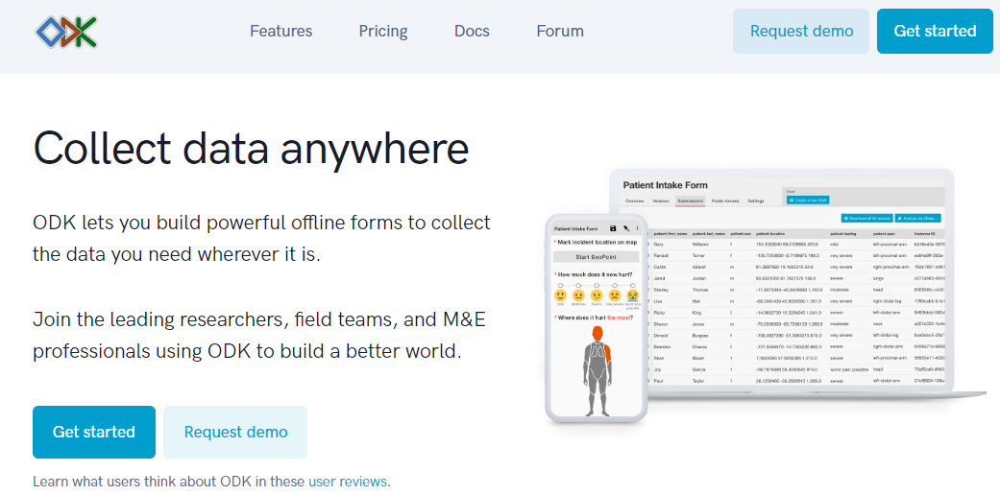
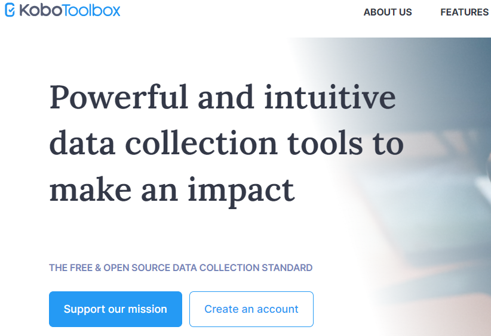
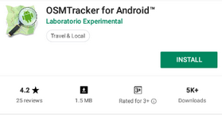
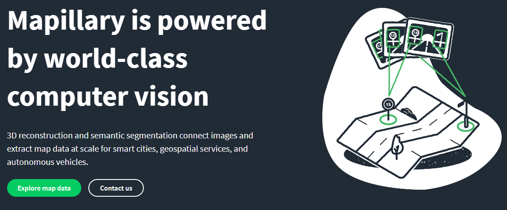

2.2 Application de collecte de données mobile-
Objectifs du cours
Dans cette section, vous apprendrez et trouverez des informations sur la sélection de l’application appropriée pour soutenir le projet de cartographie. À la fin de cette section, vous devriez être en mesure de :
- Comprendre les options d’application de la collecte de données
- Déterminer le choix d’une application de collecte de données pour les besoins de votre projet
- Appréhender ODK Collect, KoboCollect, OSMTracker, et Mapillary
Activités d’apprentissage
Choix d’une application de collecte de données
Plusieurs applications mobiles existent pour faciliter la collecte de données sur le terrain. Le choix de l’application à utiliser dépend de la capacité de l’appareil mobile, des différentes exigences de configuration et des besoins de l’enquête. Les options comprennent ODK Collect, KoboCollect, OSMTracker, et Mapillary. Si vous ne savez pas quelle application de collecte de données utiliser, vous pouvez utiliser le tableau suivant pour prendre une décision. Il ne s’agit pas des seules options disponibles, mais d’applications que HOT a utilisées et testées sur le terrain dans le cadre de projets de cartographie.
| Je veux collecter… | ODK | Kobo | OSM Tracker | Mapillary |
|---|---|---|---|---|
| Données d’enquête qualitatives | ✅ | ✅ | 🔴 | 🔴 |
| Données d’enquête quantitatives | ✅ | ✅ | 🔴 | 🔴 |
| Points GPS | ✅ | ✅ | ✅ | 🔴 |
| Photos jointes aux points GPS | ✅ | ✅ | ✅ | 🔴 |
| Pistes GPX | 🔴 | 🔴 | ✅ | ✅ |
| Imagerie Streetview | 🔴 | 🔴 | 🔴 | ✅ |
| Données attachées au point d’intérêt OSM | ✅(avec FMTM) | ✅(avec FMTM) | ✅ | 🔴 |
| Données attachées aux polygones OSM (c’est à dire bâtiments) | ✅(avec FMTM) | ✅(avec FMTM) | ✅ | 🔴 |
ODK Collect
ODK est un ensemble d’outils open-source gratuits qui aident les organisations à créer, mettre en œuvre et gérer des solutions de collecte de données mobiles. ODK Collect est une application Android qui remplace les formulaires papier utilisés dans les enquêtes de collecte de données. Elle prend en charge un large éventail de types de questions-réponses et est conçue pour fonctionner sans connexion réseau. Utilisez ODK Collect si :
- Vous voulez ou devez disposer d’une configuration facile pour la collecte des données ;
- Vous voulez remplacer le formulaire d’enquête sur papier ;
- Vous voulez collecter des données dans des endroits éloignés dont la connectivité est limitée.
Pour télécharger ODK Collect, vous pouvez aller sur Google Playstore ou télécharger la dernière version directement à partir de Github

Configuration et utilisation
- Pour la configuration voir la section Overview Data Collection using ODK Collect.
- Pour l’utilisation voir la section Using ODK Collect.
KoboCollect
KoboCollect est presque entièrement similaire à ODK Collect et est construit sur la plateforme ODK sous le nom de Kobo Organisation. Kobo dispose également d’outils d’analyse prédéfinis et constitue une autre option populaire pour les organisations humanitaires. Il dispose également de son propre serveur, appelé KoboToolbox Server que tout le monde peut utiliser gratuitement . Toutefois, vous pouvez également ouvrir un compte sur un serveur hébergé par UNOCHA à des fins humanitaires: https://kobo.humanitarianresponse.info/.

OSM Trackers
OSMTracker est une application Android qui nous permet d’enregistrer nos données d’enquête. Semblable à un GPS, OSMTracker est capable d’enregistrer des points de repère et de faire du suivi. Ce qui différencie OSMTracker des appareils GPS courants, c’est sa capacité à prendre des photos lorsque vous collectez des données d’enquête. Ces images facilitent la cartographie, car vous pouvez retrouver l’objet que vous avez pris et regarder vos photos pour plus de détails. Les points de cheminement et les traces que vous avez collectés peuvent être convertis en fichier .gpx afin que vous puissiez ouvrir vos données d’enquête à l’aide de JOSM ou télécharger directement vos données dans OpenStreetMap.
Si vous souhaitez utiliser OSMTracker, vous pouvez télécharger l’application sur votre smartphone. Ouvrez votre Google Play store et recherchez OSMTracker dans le champ de recherche. Veuillez garder à l’esprit que la dernière version de OSMTrackers a été publiée le 8 mars 2021.

Mapillary
Mapillary est la plateforme qui collecte les données d’imagerie au niveau de la rue et les rend accessibles à la communauté OSM. Elle propose une technologie capable de transformer les images en vues connectées au niveau de la rue et d’en extraire des données cartographiques. Mapillary utilise une technologie conçue pour brouiller les visages et les plaques d’immatriculation afin de protéger la vie privée. Cette technologie permet également de segmenter les images et de reconnaître les panneaux de signalisation. Les données d’imagerie de rue peuvent être acquises à l’aide de l’application mobile Mapillary (android et ios) ou à l’aide d’une caméra d’action (GoPro, par exemple).

Mapillary peut vous aider à générer de nouvelles données ou à assurer la qualité d’OSM. Il est disponible à la fois dans iD et JOSM en tant que données cartographiques supplémentaires/plugins qui doivent être activés au préalable. L’un de nos cas d’utilisation de Mapillary s’est produit lors du projet Meta Road Mapping en Indonésie. Nous avons collecté des données d’imagerie de rue pour valider le type de marquage des routes à Kalimantan.
N’oubliez pas que les données d’imagerie au niveau de la rue ne sont pas disponibles dans Mapillary pour tous les pays ou toutes les localités. Vous devez vérifier la couverture à l’adresse suivante https://www.mapillary.com/app/. Si vous pensez que la zone de votre projet n’est pas couverte par Mapillary, vous pouvez envisager de collecter les données à l’aide de l’application.
[Quiz] Testez vos connaissances
-
Mapillary peut nous aider à collecter des données d’imagerie au niveau de la rue à des fins d’assurance qualité.
a. Vrai
b. Faux
-
Nous utilisons OSMTracker pour collecter des données d’enquête quantitatives et qualitatives.
a. Vrai
b. Faux
-
ODK Collect est une application gratuite et open-source qui permet de collecter des données qualitatives. Kobo Collect est une application payante qui permet de collecter des données quantitatives.
a. Vrai
b. Faux
-
Nous devons tenir compte du type de données que nous voulons collecter pour nous assurer que nous choisissons la bonne application et la bonne plateforme à utiliser pendant notre projet sur le terrain.
a. Vrai
b. Faux
Answer: 1. A | 2. B | 3. B | 4. A
Liste de contrôle des activités
À la fin de cette section, vous devriez être en mesure de comprendre :
- L’application/plateforme à envisager d’utiliser en fonction du type de données que vous souhaitez collecter ;
- La différence entre les applications que HOT utilise déjà jusqu’à présent pour des projets de terrain.
Ressources complémentaires
- OpenDataKit: https://opendatakit.org
- ODK Guide: https://docs.opendatakit.org/collect-intro
- ODK Build: https://build.opendatakit.org
- Créer un formulaire pour ODK: http://xlsform.org/en
- OSMTracker LearnOSM: https://learnosm.org/en/mobile-mapping/osmtracker/
- Intro à Mapillary: https://help.mapillary.com/hc/en-us/articles/115001881105-Introduction-to-Mapillary